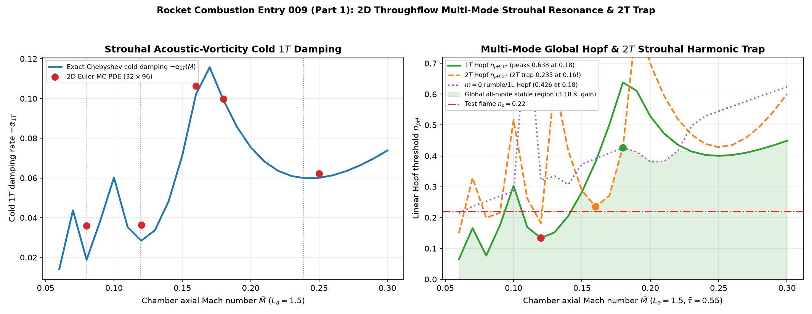
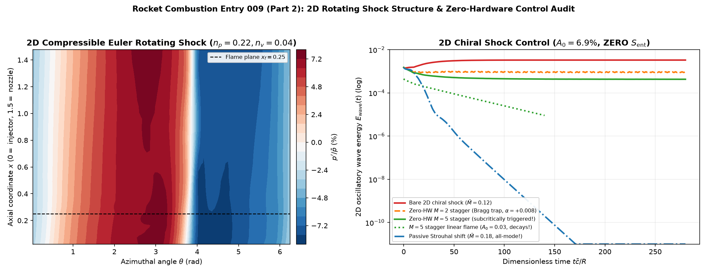
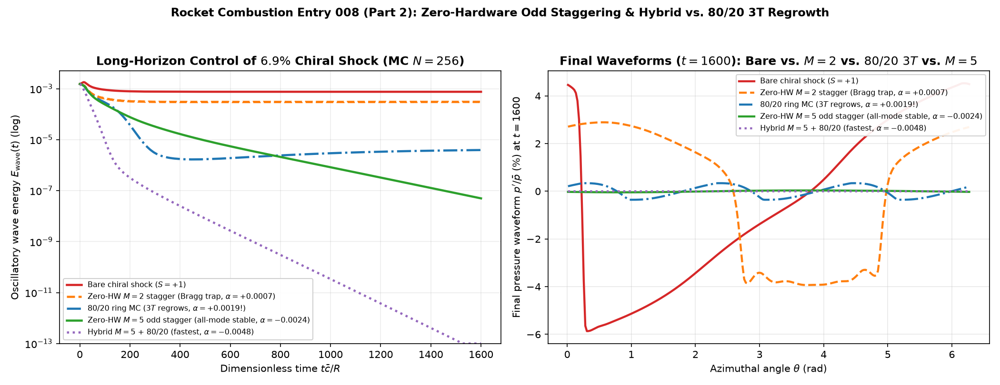
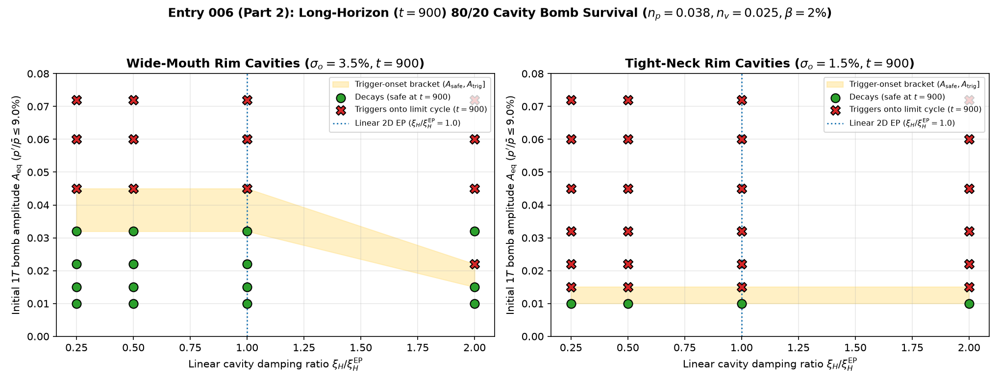
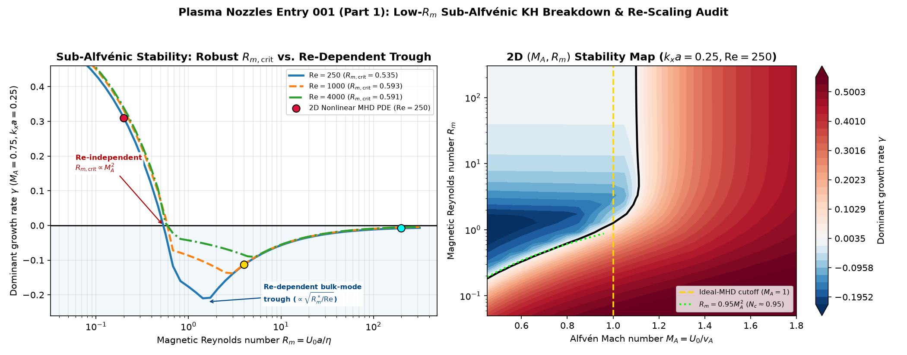
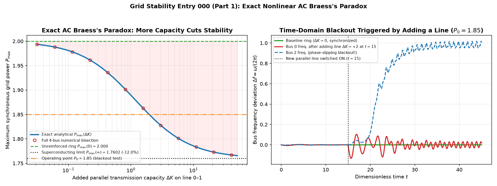
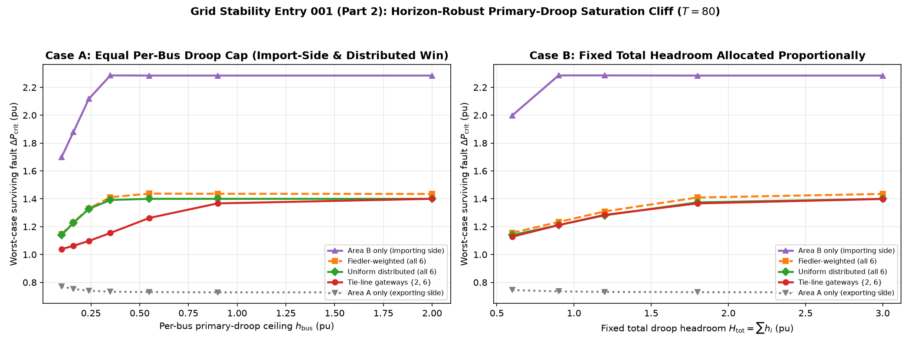

15 Verified Entries, 6 Adversarial Peer Reviews, and What Broke Along the Way
An open, reproducible computational-physics notebook across rocket combustion, plasma nozzles, and renewable power grids—where every formula is cross-checked against PDEs and audited by independent models.
Milestone 3 Update: 2D Compressible Euler Throughflow & Multi-Mode Strouhal Resonance (009)
We solved Open Problem #1 from our synthesis by upgrading rocket-combustion/ from a 1D periodic ring to the full 2D (x, θ) conservative compressible Euler equations with physical steady axial throughflow M̄ > 0, an exact choked zero-swirl propellant injector at x = 0, and a Marble–Candel compact choked nozzle at x = La—with zero ad-hoc entropy-flush or swirl closures (steady preservation to 1.1×10−16, inviscid conservation to 1.9×10−16).
Physical convection naturally flushes entropy (8.7×107×) and uniform swirl (2.1×105×), isolating the pure negative Marble–Candel rarefaction echo (−0.366% at t = 11.01) and locking stationary limit cycles at ρ̄ = 0.9986–1.0010. Zero-swirl vorticity shedding from the faceplate creates sharp Strouhal damping peaks—but double-model Peer Review #6 uncovered a critical harmonic trap: tuning to the half-integer 1T cold-damping peak (M̄ = 0.16, St1T ≈ 1.5) puts 2T directly into an integer trough (St2T ≈ 3.0, npH,2T = 0.235), igniting a 6.53% 2T rotating limit cycle on 48×144 that coarse 32×96 grids hid.

Against a 6.9% 2D chiral rotating shock (np = 0.22, nv = 0.04), linearly stable odd M = 5 injector staggering (α = −0.0067; verified decaying under a linear flame) subcritically triggers at A0 = 0.015 on 48×144 due to its small linear margin plus 6.7–6.9× Erlang-4 cubic gain asymmetry, whereas passive Strouhal Mach shifting to M̄ = 0.18 annihilates the shock across all initial conditions (spin_1T, stand_seed, spin_2T) and grids (32×96, 48×144) with zero cavities or baffles.

Milestone 2 Update: Compressible Euler Shocks & Rotating-Shock Control (007–008)
We took the rocket-combustion/ track beyond bulk-linear acoustics into the full conservative 1D periodic compressible Euler equations (γ = 1.25, 2nd-order MUSCL-MC + HLLC Riemann solver, exact inviscid conservation to 4×10−16, and Fay–Burgers cubic weak-shock dissipation matching 0.2209 u03).
Gasdynamic shock steepening flipped two core bulk-linear predictions on their head: under residence-time entropy flushing (νres ∈ [0.01, 0.05]), Rankine–Hugoniot O(A3) shock losses cap saturated limit-cycle pressure by −28% (7.65% → 5.52% p′/p̄, N = 512 converged to 0.01%), quench subcritical triggering across all 16 N = 512 MC runs, and trigger a complete attractor/saddle exchange—reversing bulk-linear spinning selection (S → +1) to a standing-wave attractor (S → 0) governed by the Landau criterion kshA > 2(ac − as)A2.

Turning on swirled chiral velocity coupling (nv > 0) in Entry 008 smoothly tilts that standing attractor along a hysteresis-free mixed-wave branch S*(nv) (verified at t = 900: +0.686 vs. +0.685) into a pure rotating sawtooth shock (S* ≥ 0.95 for nv ≥ 0.024)—while non-swirled even-|u| coupling never produces a strong spinning shock.
In a 5-way control shootout against a 6.9% chiral rotating shock (np = 0.060, nv = 0.025, t = 1600), pairing exact Fourier-collocation eigen-spectra with low-dissipation MC numerics revealed a striking reversal from Peer Review #5: the 80/20 cavity ring alone crushes 1T and 2T but leaves co-rotating 3T linearly unstable (α = +0.00192), whereas zero-hardware odd M = 5 injector lag staggering (τ ∈ {0.30, 2.50}) is the only single-mechanism all-mode stabilizer (αmax = −0.00235, 6,500× energy cut with zero cavities or baffles), and the Hybrid M = 5 + 80/20 doubles the all-mode margin (αmax = −0.00477).

Milestone 1: Three Tracks & First 12 Entries
1. Rocket Combustion Instability (000–006)
Starting from a 1D Crocco n–τ longitudinal baseline and scaling up to a 2D nonlinear cylindrical-annulus PDE, we tested passive stabilization without heavy protruding baffles. Two design laws stood out: an inverse-square cavity volume split (80% 1T / 20% 2T in an odd 5-pair ring, doubling worst-case margin over a naive 50/50 split) and odd-periodic azimuthal injector lag staggering (M = 3, 5 avoids the M = 2 Bragg-orientation trap that amplifies orthogonal standing waves by +67%).
Under calibrated quadratic orifice drag over long horizons (t = 900), widening cavity mouth open-area ratio from 1.5% to 3.5% raises 2D finite-amplitude 1T bomb survival by ~2–4× in amplitude (~4–16× in energy) for ξH ≤ ξHEP, while over-damping above the exceptional point cuts wide-mouth margin in half.

2. Plasma Nozzles & MHD Propulsion (000–002)
Magnetic nozzles accelerate hot plasma without material walls, trading Alfvén detachment (MA = 1) against dipole flare divergence. We paired a quasi-1D conservative finite-volume nozzle baseline with a 2D pseudospectral (IFRK4) resistive-MHD shear solver and an exact source-free compliant-flux-tube MHD conservation law (choking at the Roberts–Webb tube speed cT < cs, inflating downstream as A ∝ Bvac−2/γ).
In 2D resistive MHD, sub-Alfvénic (MA < 1) Kelvin–Helmholtz shear breakdown obeys a clean Re-independent Stuart-number law, Rm,crit = Nc(kxa) MA2, with longer wavelengths breaking down at larger Rm (Nc = 1.47 at kxa = 0.125 vs. 0.57 at 0.50).

3. Renewable Power Grid Stability (000–001)
Moving beyond space propulsion, we opened a track on nonlinear AC synchronization in 100% inverter-based renewable grids. We derived an exact closed-form 4-bus AC Braess’s paradox proving that adding infinite parallel capacity to a single line in a stressed ring cuts global synchronous capacity by −11.99% (2.000 → 1.7602) and triggers an immediate time-domain blackout.
On a 12-bus two-area grid under N−1 tie-line + generator-trip faults, we found a sharp blind spot in linear H2 inverter placement: linear norms rank exporting-only and importing-only Grid-Forming (GFM) placement almost identically and worst overall, yet horizon-robust nonlinear survival proves importing-side GFM survives 3.14× larger faults than exporting-side (2.285 vs. 0.728 unsaturated; 2.118 vs. 0.740 under per-bus droop cap hbus = 0.24). Among balanced cross-corridor designs, distributing GFM across all 6 buses shares per-bus droop headroom for +21% higher fault survival than concentrated 2-bus tie-line gateways.


Why Adversarial Cross-Model Peer Review Mattered
Every one of our six independent peer reviews caught real mathematical or numerical traps that looked completely plausible at first glance:
- Unfiltered k = 0 bulk runaway (Review #1): Standard Crocco pressure coupling has a positive real static root for every n > ζ. Fixed uniformly with a DC-blocking high-pass filter Hhp(s) and real-axis scans.
- Short-horizon bomb illusions (Reviews #2 & #3): Because the 80/20 cavity ring’s slowest linear decay time scale is τ ≈ 550, horizons of t = 130–180 hid slow regrowth at t = 400–900. Replaced with t = 1000 linear checks and t = 900 dense amplitude scans.
- Unequal-enthalpy nozzle metric & finite-Re box mode (Review #3): Comparing compliant (cT-choked) and rigid nozzles at equal throat static state gave the compliant nozzle 19% less stagnation enthalpy, creating a spurious negative gain; re-normalizing to equal H0 revealed true near-zero high-β erosion. Similarly, the intermediate-Rm MHD trough proved to be a finite-Re continuum mode.
- Ghost-crawl false positives in power-grid survival (Review #4): A 26 s horizon accepted trajectories with no post-fault equilibrium that slipped at t = 30–44 s, while rejecting slow-settling saturated cases. Restoring an exact saturated rotating-frame equilibrium check over T = 80 fixed both.
- Numerical-dissipation masking of 3T & closure sensitivity (Review #5):
minmodat N = 256 added −5.6×10−3 excess damping on 3T, hiding the 80/20 ring’s true linear 3T instability (α = +0.0019) by 10,000×, and the smooth chiral branch S*(nv) proved conditional on residence entropy flushing (νres > 0). Switching to the MC limiter, adding exact Fourier-collocation eigen-spectra, and reporting full νres sensitivity tables fixed both. - 2T Strouhal harmonic trap, coarse-grid bistability & inlet-tail echo (Double-Model Review #6): Checking 1T alone overstated the M̄ = 0.18 global Hopf gain (4.77× vs. true all-mode 3.18×) and missed a 6.53% 2T rotating limit cycle at M̄ = 0.16 masked by 32×96 vorticity damping; coarse 28×96 grids also hid low-gain bistability at M̄ = 0.06, and a Gaussian tail touching x = 0 produced a spurious positive bounce ahead of the true negative Marble–Candel rarefaction. Re-running on 48×144 with multi-mode spectra and a zero-tail entropy spot hardened every result.
Reproduce Everything Locally
Every plot and metric in the repository is generated from scratch with pinned dependencies via uv:
git clone https://github.com/marcelolx/math.git
cd math
uv sync
# Run any entry's verification script:
uv run python rocket-combustion/sim/exp009_2d_euler_throughflow.py
uv run python rocket-combustion/sim/exp008_chiral_shock_competition.py
uv run python plasma-nozzles/sim/exp001_mhd_kelvin_helmholtz.py
uv run python grid-stability/sim/exp001_gfm_placement_and_saturation.py
Next up: 2D compressible Euler throughflow with protruding injector baffles & wide-mouth faceplate cavity rings (rocket-combustion/010), 2D axisymmetric magnetic nozzles with exterior field back-reaction (plasma-nozzles/003), and full inverter current-limiting + reactive Q–V coupling (grid-stability/002).